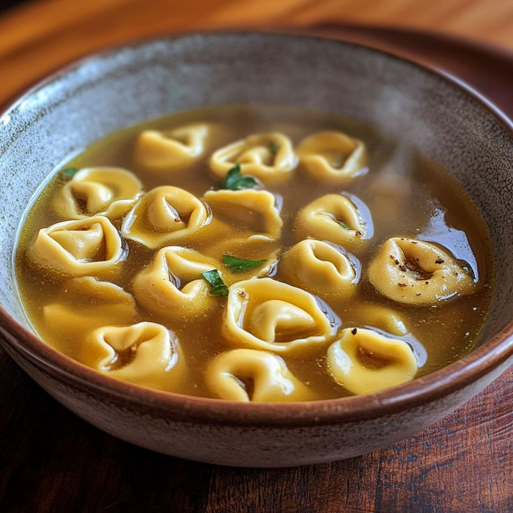

Ricette Salate
In questa sezione troverai tutte le ricette salate tipiche delle regioni italiane, dai piatti di pasta alle pizze, ideali per pranzi e cene gustose.
Friuli Venezia Giulia -Frico con patate e cipolle-
Ingredienti:
-Pepe nero q.b.
-Montasio stagionato o semistagionato 500 g
-Patate (peso da pulite) 500 g
-Cipolle (peso da mondate) 200 g
-Sale fino q.b.
-Olio extravergine d'oliva 50 g
Preparazione:
Per preparare il frico con patate e cipolle, sbucciate le cipolle e affettatele finemente a rondelle; poi sbucciate anche le patate con un pelaverdure o un coltello e grattugiatele con una grattugia a fori grossi. Eliminate la scorza del formaggio Montasio e grattugiatelo sempre con la grattugia a fori grossi.
Ora che gli ingredienti sono pronti, in un tegame capiente versate 40 gr di olio, e la cipolla. Fate soffriggere qualche minuto a fuoco dolce mescolando spesso con un cucchiaio di legno per evitare che la cipolla si attacchi al fondo della padella o si bruci. Dopodiché unite anche le patate grattugiate e fate cuocere per circa 10 minuti.
A questo punto unite anche il formaggio Montasio grattugiato, salate e pepate a piacere e fate cuocere il frico per circa 20 minuti a fuoco medio, mescolando per far sciogliere il formaggio completamente.
Quando avrete terminato la cottura e avrete ottenuto un impasto omogeneo, spegnete il fuoco. In una padella antiaderente a bordo basso versate un filo d'olio, fatelo scaldare leggermente e versatel'amalgama di patate, cipolle e Montasio nella padella, cercando di eliminare il grasso superfluo.
Distribuite e compattate il frico nella padella e cuocetelo a fiamma alta senza mescolare, a mo' di frittata. Appena si sarà formata la crosticina, giratelo dall'altro lato. Se ancora presente, eliminate il grasso in eccesso prima di trasferire il frico con patate e cipolle su un piatto da portata. Poi tagliatelo in porzioni e accompagnatelo con la polenta!

Emilia Romagna -I Tortellini-
Ingredienti:
Per la pasta fresca all'uovo:
-Farina 0 per sfoglia 300 g
-Uova (circa 3 medie) 195 g
Per il ripieno:
-Lonza di maiale (unico pezzo) 100 g
-Mortadella (unico pezzo) 100 g
-Prosciutto crudo (unico pezzo) 100 g
-Parmigiano Reggiano DOP 150 g
-Uova 1
-Sale fino q.b.
-Noce moscata q.b.
Per il brodo:
-Biancostato di manzo (adulto) 1,5 kg
-Gallina (vecchia) ½
Preparazione:
Per preparare i tortellini in brodo iniziate dal ripieno che avrà bisogno di un lungo riposo. Tagliate in pezzi la mortadella, il prosciutto e la lonza, eliminando le parti esterne più dure. Passate il tutto nel macina carne, utilizzando uno stampo medio e raccogliendo la carne tritata in una ciotola. Non mettete da parte il trita carne, servirà di nuovo. Aggiungete alla carne macinata il formaggio grattugiato, il sale, il pepe e l'uovo. Unite anche un pizzico di noce moscata grattugiata. Amalgamate tutti gli ingredienti impastando con le mani.
Passate nuovamente nel tritacarne, questa volta utilizzando lo stampo più sottile. Compattate ancora con le mani, poi coprite con pellicola e riponete in frigo per 12 ore. Quando mancheranno circa 4 ore preparate il brodo di carne. Sbucciate la cipolla e tagliatela a metà. Inserite 3 chiodi di garofano su ciascuna metà e sistematele all'interno di una padella calda. Lavate bene il sedano e la carota, poi tagliateli in pezzi. Versate la gallina e il manzo in una pentola capiente.
Aggiungete anche sedano e carote. Quando le cipolle saranno ben dorate prelevatele con una forchetta e trasferitele in pentola. Aggiungete l'acqua e un pizzico di sale. Cuocete a fuoco medio. Dal bollore ci vorranno circa 4 ore. Nel frattempo preparate la pasta all'uovo. Versate la farina su una spianatoia e date la classica forma a fontana. Versate all'interno le uova leggermente sbattute e iniziate a mescolare gli ingredienti con una forchetta. Passate poi ad impastare a mano, continuate fino ad ottenere un panetto omogeneo. Avvolgetelo nella pellicola e lasciatelo riposare a temperatura ambiente. Di tanto in tanto controllate il brodo e schiumatelo utilizzando una schiumarola .
Riprendete la pasta all'uovo e trasferitela su una spianatoia. Schiacciatela con le mani per appiattirla, poi stendetela con un mattarello fino ad ottenere una sfoglia molto sottile. Utilizzando una rotella tagliapasta o una bicicletta tagliapasta realizzate dei quadratini. Posizionate al centro di ogni quadratino una punta di ripieno.
Sollevatene uno, chiudetelo in modo da formare un triangolino e fate una leggera pressione sui bordi. Adesso abbassate i due bordi laterali, facendoli andare attorno al dito. Sigillate pizzicando i due bordi di pasta, e il primo tortellino è pronto. Fate la stessa cosa per tutti gli altri e man mano disponeteli su un vassoio con un canovaccio.
Quando il brodo sarà pronto estraete con una schiumarola la carne e le verdure. Trasferite in una ciotola. Assaggiate quindi il brodo ed eventualmente regolate di sale.
Poi filtratelo, dividendo il brodo in due pentole. Portate di nuovo una delle due pentole con il brodo a bollore e tenete in caldo l'altra. Non appena il brodo inizierà a bollire immergete i tortellini. Aspettate pochi minuti fino a che verranno a galla, poi utilizzando una schiumarola prelevate una porzione di tortellini e trasferiteli in un piatto. Aggiungete il brodo caldo, prelevandolo dall'altra pentola, in questo modo risulterà più limpido. Fate lo stesso fino a terminare tutti i piatti e serviteli